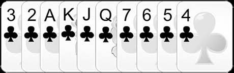

Introdução
O objetivo do jogo é conseguir 12 pontos através de apostas (trucos) que são feitas ao longo de diferentes rodadas.
Valor de Cada Cartas( Em ordem descrecente)
Como jogar Truco
Ao princípio da partida, o jogador mão (o que começa a jogar) é escolhido aleatóriamente. Na rodada seguinte,
começará o jogador situado à esquerda deste, isto é, o jogo transcorre em sentido horário.
Ao princípio de cada rodada, 3 cartas são distribuídas a cada jogador e uma carta fica descoberta na mesa.
Esta carta define a “manilha” que será a seguinte carta de acordo com a ordem descrita anteriormente.
Por exemplo, se esta carta é um “7”, a manilha seria uma “Q” ; ou se é um “3”, a manilha seria um “4”.
Cada jogador em seu turno joga uma carta.
O jogador com a carta de maior valor ganha esta mão e jogará primeiro na seguinte (em caso de empate, repetirá o jogador anterior).
A primeira dupla que conseguir 2 mãos, ganha a rodada. Se houver empate em 3 mãos seguidas, ninguém marca pontos.
Você pode jogar suas cartas viradas para baixo para esconder suas jogadas, exceto na primeira mão.
O truco
O truco é uma aposta que pode ser feita em qualquer momento da partida e o vencedor da partida o ganha.
A dupla adversária deve responder com uma das seguintes opções:
- Não aceito. Recusa o truco e a dupla adversária ganha a rodada.
- Aceito. Aceita a aposta que será decidida ao final da rodada.
- Truco 6/9/12. Sobe a aposta e passa o turno à dupla adversária para que decida.
| Aposta | Pontos |
|---|---|
| Se não houver aposta | 1 ponto |
| Truco | ganha 3 pontos |
| pedir 6 | ganha 6 pontos |
| pedir 9 | ganha 9 pontos |
| pedir 12 | ganha 12 pontos e o jogo |
Mão de 11 ou Mão de ferro
A “mão de 11” ocorre quando uma das duplas já tem 11 pontos.
Neste estado não se pode trucar e a dupla que tem 11 pontos pode ver as cartas do
seu companheiro e decidir se jogam a rodada ou não.
Sinais de Cartas
| Sinal | Significado |
|---|---|
| Pisca | Indica que possui Manilha de Zap. |
| Sobrancelha | Indica que possui Manilha de Copas. |
| Bochecha | Indica que possui Manilha de Paus. |
| Língua | Indica que possui Manilha de Ouros. |